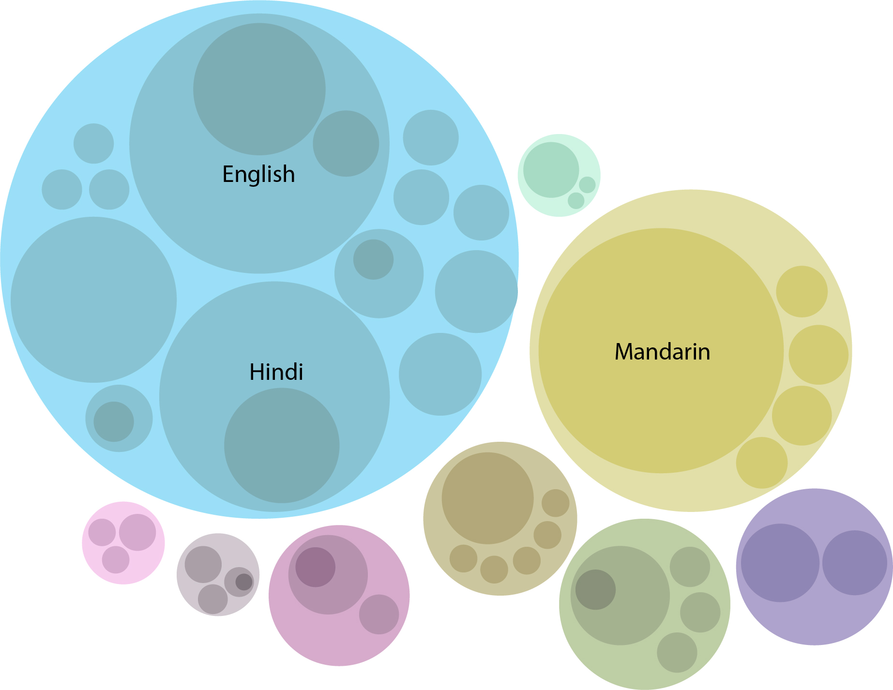

Improving a Visualization
Assignment 5 - Anjanaa Devi Srikanth

Al Jazeera designed this chart for World Mother Language Day on 21 February. This chart maps the most widely spoken languages by native and non-native speakers across the world. The languages are grouped and coloured according to the family that the language belongs to.
What is wrong with this chart?
-
Idiom Issue:
- Why complicate it?
The basic chart is a packed circle chart. The tesselations make it complicated to gauge the area. - Saliency
The bold line demarcating the language families seems unnecessary as they are differentiated by colour anyway. - Why not tree maps?
It seems to me that the idiom has been chosen predominantly because the circular outline symbolises the Earth.
- Why complicate it?
-
Data issue:
- Selective data points in hierarchy
Egyptian Arabic and Standard Arabic are shown as two different data points, when in fact Egyptian Arabic is a dialect and not a formal language. Given that other languages like English and Hindi also have dialects, it seems that the dialects are selectively added to visualise the language families in a particular way.
- Selective data points in hierarchy
 Simplify it!
- Hierarchy Levels
The topmost hierarchy represents the language family. The second level of hierarchy denotes the language. Dialects of the language can be introduced in the third level of hierarchy, if the data is available. - Smart Use of Colour Channel
Each language family can have a colour gradient, so a circle representing a dialect of a language in that family will be the lightest of that colour. It improves the viewer's perception.